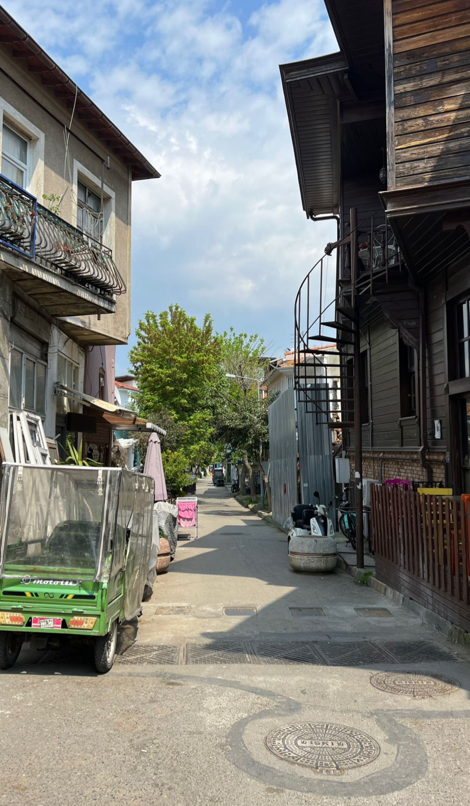
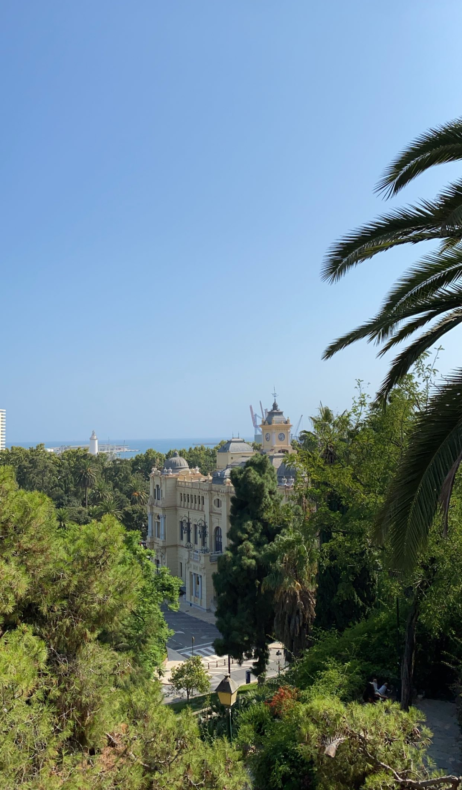
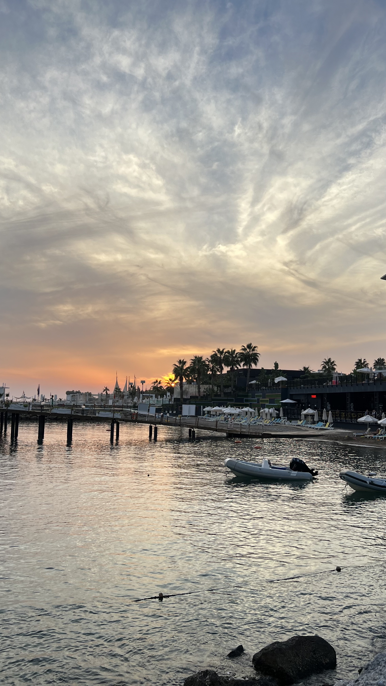
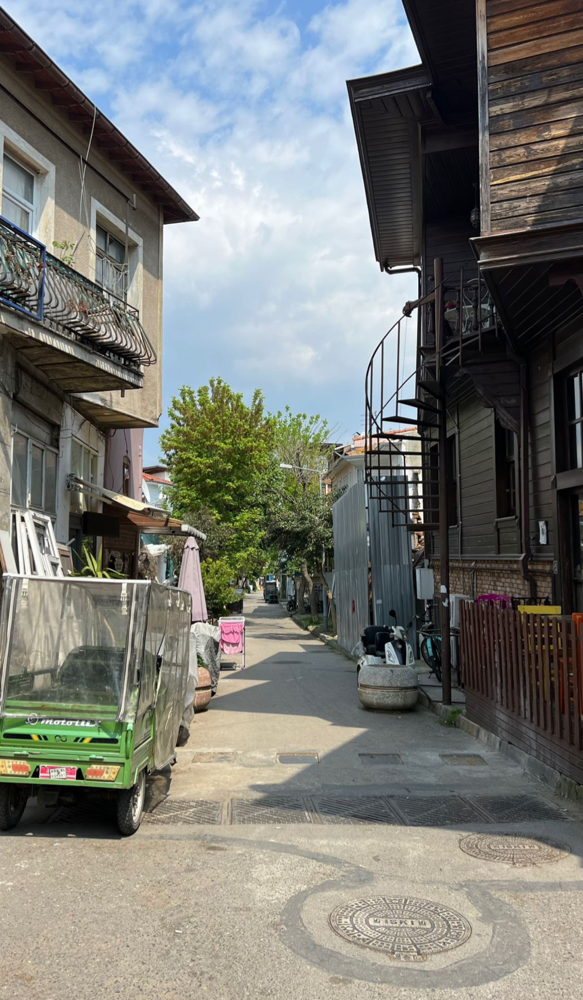
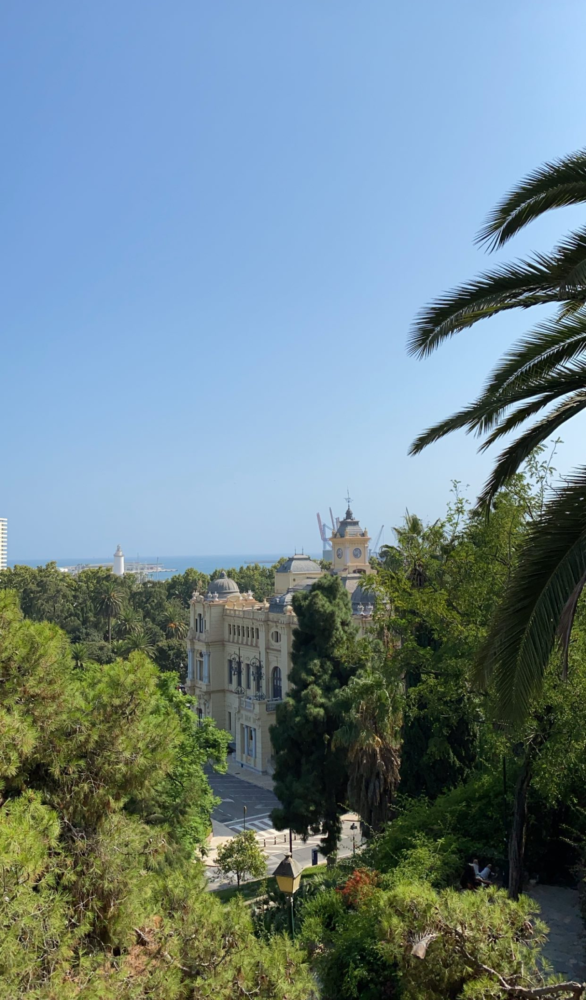
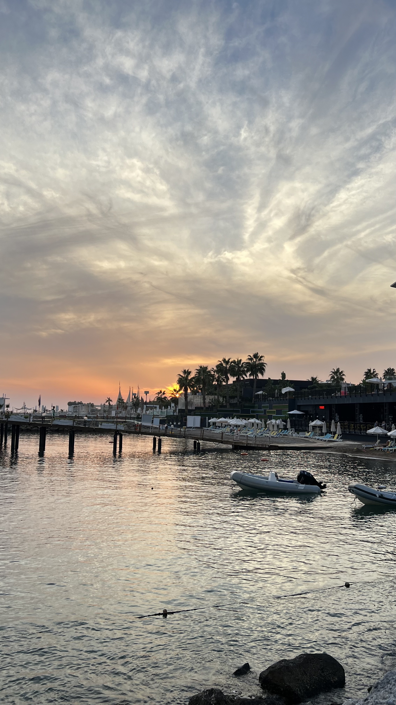

Jouw gids voor al je vakanties!
titel
 

Welkom avonturier!
Duik in de wereld van reisverhalen en ontdekkingen. Hier deel ik mijn persoonlijke ervaringen door de
wonderen van de wereld.
Van adembenemende uitzichten tot leuke famillie plekken, ik beoordeel en deel mijn reisavonturen.
Pak je virtuele paspoort en reis met me mee door de pagina's van ontdekking! 🌍✈️
Over mijzelf
Ik ben Nasima Bel Mouhand en hou net als vele anderen om op vakantie te gaan. Ik ben 19 jaar oud en studeer Communication and Multimedia Design (CMD) aan de Hogeschool van Amsterdam. Ik ben naar verschillende landen op vakantie gegaan en wil daarom mijn ervaringen met jullie delen. Mijn doel is daarom jullie goed laten voor te bereiden hoe je jouw ideale vakantie goed kan inplannen.